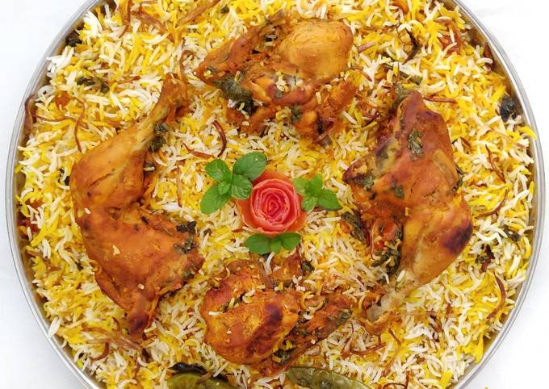
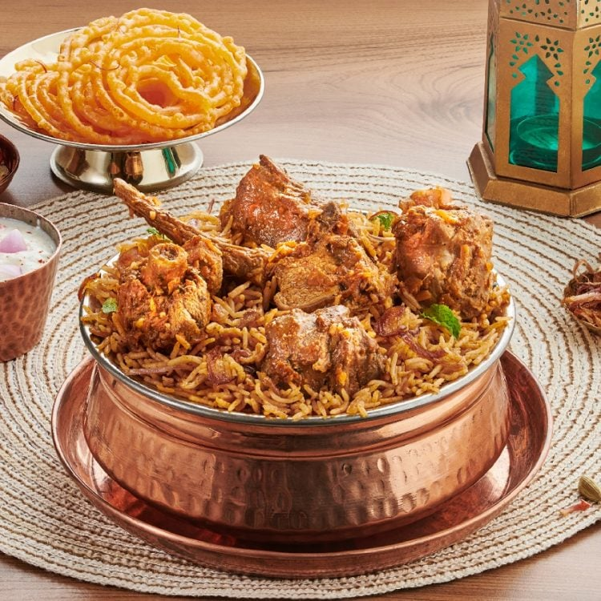
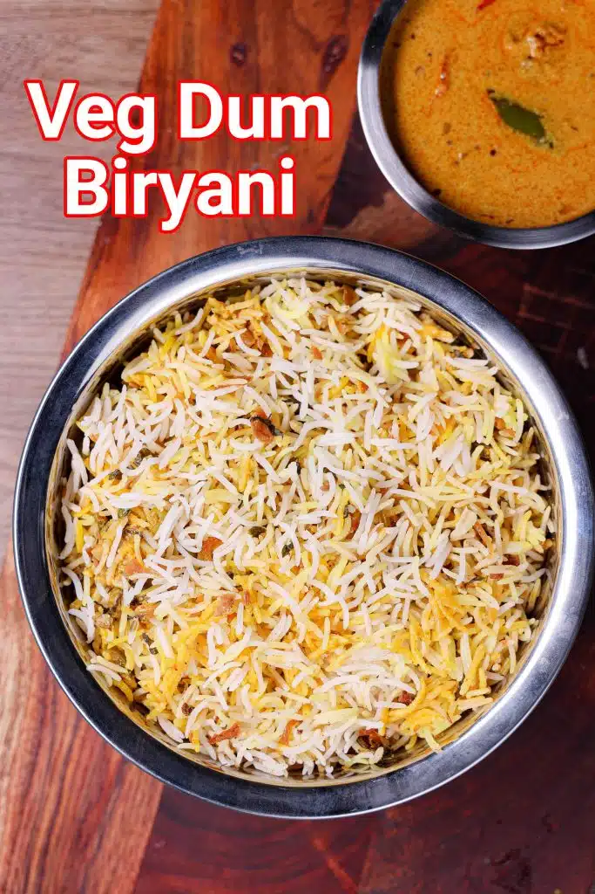

Chicken Biryani is a savory chicken and rice dish that includes
layers of chicken, rice, and aromatics that are steamed together.
Mutton Biryani - Rs599
Mutton biryani is the epitome of Indian cuisine, with layers of
beautifully spiced mutton and tender grains of rice topped with
coriander and fried onions.
Hyderabadi Biryani - Rs459
Hyderabadi Biryani is one of the most popular Biryanis
in India.Also known as Hyderabadi Dum Biryani, it is a
style of Biryani from Hyderabad.
Tandoori Chicken Biryani - Rs399

Tandoori Chicken Biryani is a rice-based dish (usually using basmati rice) made with
spices and chicken, and chicken is marinated with Tandoori masala and yogurt. The rice is steamed
over low heat so that it absorbs the flavors of the curry. Biriyani rice topped with spicy grilled
Tandoori Chicken.
Lucknowi Mutton Biryani - Rs559
Lucknowi Biryani, also known as Awadh Biryani, mainly relies upon making a yakhni
stock from meat that is slow cooked and spiced with a combination of whole aromatic spices for
2-3 hours, untill the meat is succulent and soft .
Hyderabadi Mutton Biryani - Rs659

Hyderabadi biryani (also known as Hyderabadi dum biryani) is a style of biryani
originating from Hyderabad, India made with basmati rice and meat (mostly mutton).
Originating in the kitchens of the Nizam of Hyderabad, it combines elements of Hyderabadi
and Mughlai cuisines.
Veg Dum Biryani - Rs199

Traditionally dum biryani is prepared with a mix of meat, vegetables, and rice,
however, this is a vegetarian alternative with only vegetables.
Panner Biryani - Rs259
Paneer biryani is a mildly spiced and delicately flavored dum cooked,
traditional biryani recipe. Simply moreish and flavorful paneer biryani that pairs
beautifully with any raita.